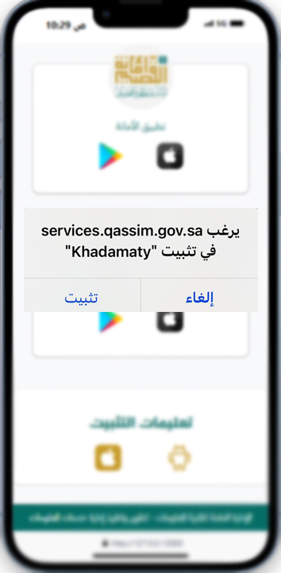
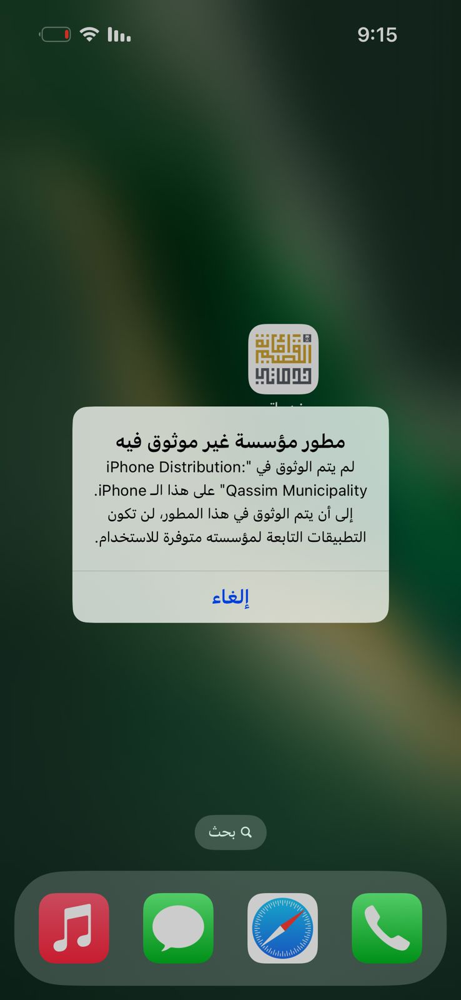
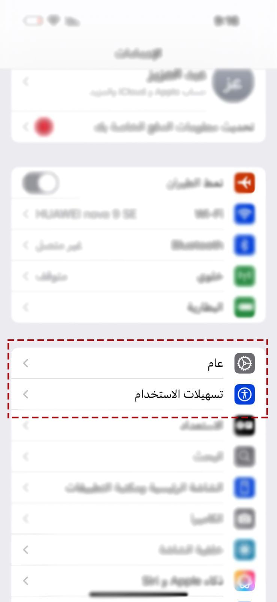
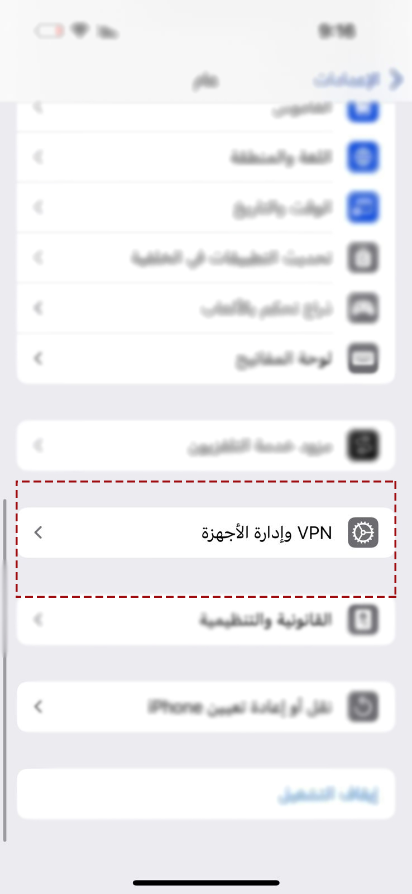
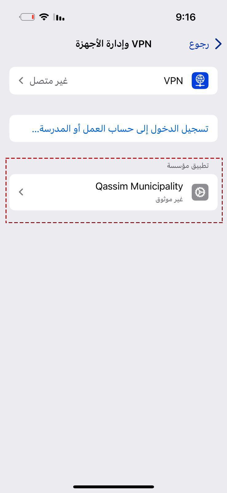
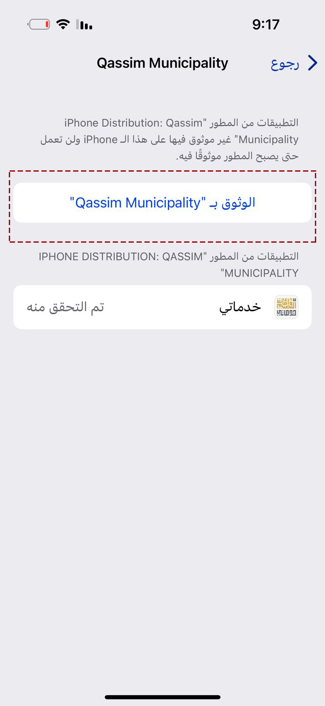
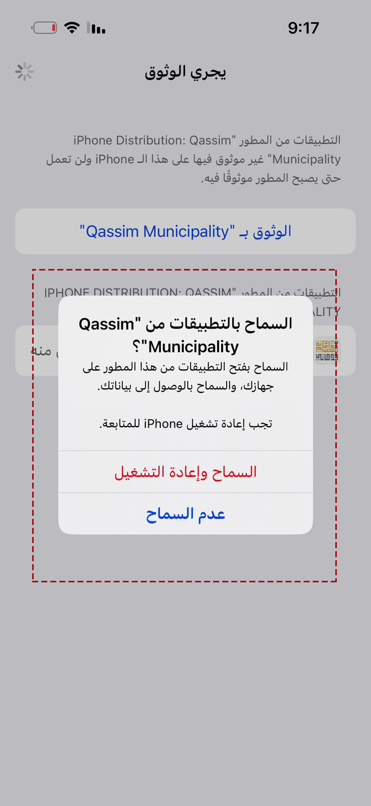
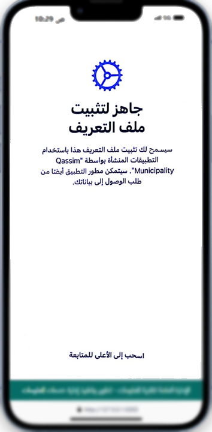

تعليمات تثبيت تطبيق خدماتي على iPhone
لتثبيت التطبيق على جهازك الـ iPhone، يرجى اتباع الخطوات التالية:
1. تثبيت التطبيق
اذهب إلى صفحة تطبيقات الأجهزة الذكية واضغط على زر التثبيت.

2. فتح التطبيق
عند فتح التطبيق سوف تظهر لك الرسالة التالية:

3. توثيق التطبيق
انتقل إلى "الإعدادات" ثم اختر "عام".

4. الذهاب إلى VPN وإدارة الأجهزة
في الإعدادات، اذهب إلى "VPN" ومن ثم "إدارة الأجهزة".

5. اختيار "Qassim Municipality"
اختر "Qassim Municipality" من قائمة الأجهزة الموثوقة.

6. الوثوق بـ "Qassim Municipality"
اختر الوثوق بـ "Qassim Municipality" لتفعيل التطبيق.

7. إعادة تشغيل الجهاز
بعد الوثوق، اختر السماح ثم قم بإعادة تشغيل جهازك.

8. تثبيت ملف التعريف
بعد إعادة التشغيل، اسحب الشاشة إلى أعلى واختر تثبيت ملف التعريف.
